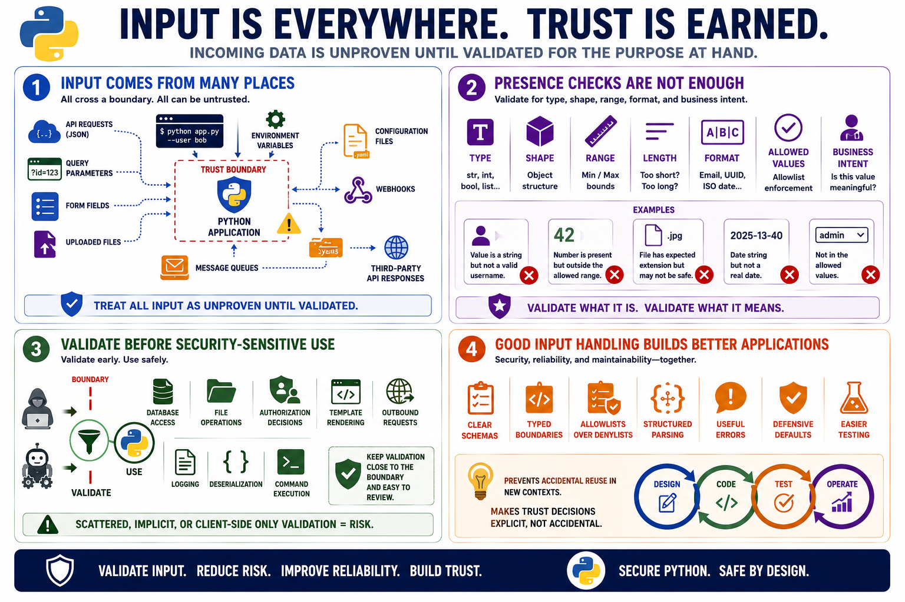

Trusting Input Too Early
Connecting to LMS... Progress: in progress

Narration
Input is not only what a user types into a form. In Python applications, input can arrive through API requests, JSON payloads, query parameters, form fields, uploaded files, command-line arguments, environment variables, configuration files, webhooks, message queues, and third-party API responses. Some of this input may appear internal or machine generated, but it still crosses a boundary. A safe application treats incoming data as unproven until it has been checked for the purpose at hand.
Presence checks are not enough. It is common to verify that a field exists, then immediately use it in a sensitive operation. Validation should consider type, shape, range, length, format, allowed values, encoding expectations, and business intent. A value may be a string, but still not be a valid username. A number may be present, but still outside the allowed range. A file may have an expected extension, but still not be safe for downstream processing.
Validation should happen before security-sensitive use. That includes database access, file operations, authorization decisions, template rendering, outbound requests, logging, deserialization, and command execution. Validation should also be close enough to the boundary and clear enough that reviewers can understand what the code is relying on. When validation is scattered, implicit, or assumed from client-side behavior, the code becomes difficult to reason about.
Good input handling is not only a security control. It improves reliability and maintainability. Clear schemas, typed boundaries, allowlists, structured parsing, useful errors, and defensive defaults make the application easier to test. They also reduce the chance that a future developer will accidentally reuse a value in a new context where the original validation is no longer sufficient. Secure Python code makes trust decisions explicit rather than accidental.